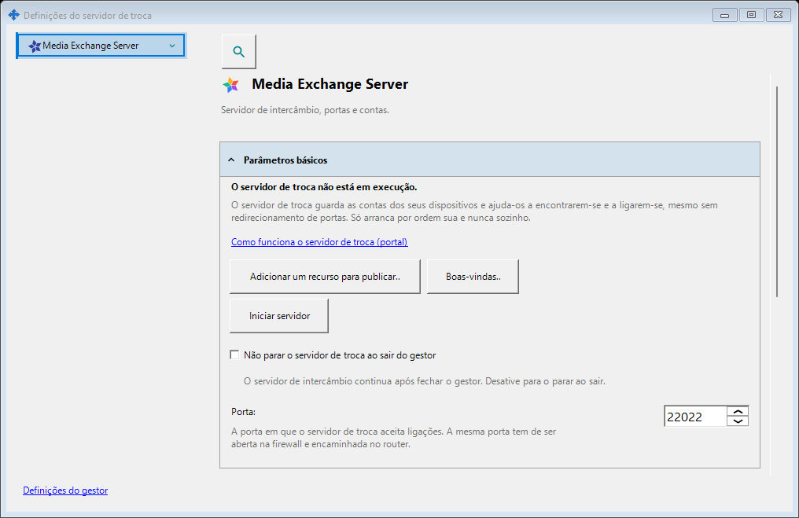
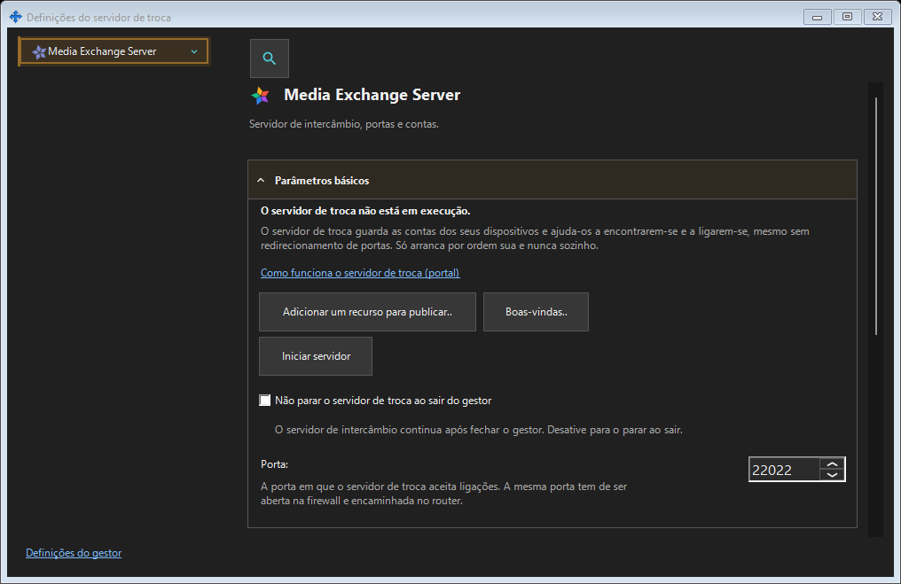

Definições do servidor de troca
Finalidade
SFTP: porta, limite de ligações, rede local e serviço Windows. Servidor de troca: endereço, TLS, contas, dispositivos, convites, serviço, registos e administração remota.


Nesta ordem
Abra pela área de notificação ou pelas ligações dos componentes. Abrir e fechar não inicia nem para servidores. O acesso remoto não exige servidor local.
Os elementos
Definições do servidor de troca
SFTP: porta, limite de ligações, rede local e serviço Windows. Servidor de troca: endereço, TLS, contas, dispositivos, convites, serviço, registos e administração remota. Abra pela área de notificação ou pelas ligações dos componentes. Abrir e fechar não inicia nem para servidores. O acesso remoto não exige servidor local.
Definições do gestor · Definições de partilha SFTP · Definições do servidor de troca